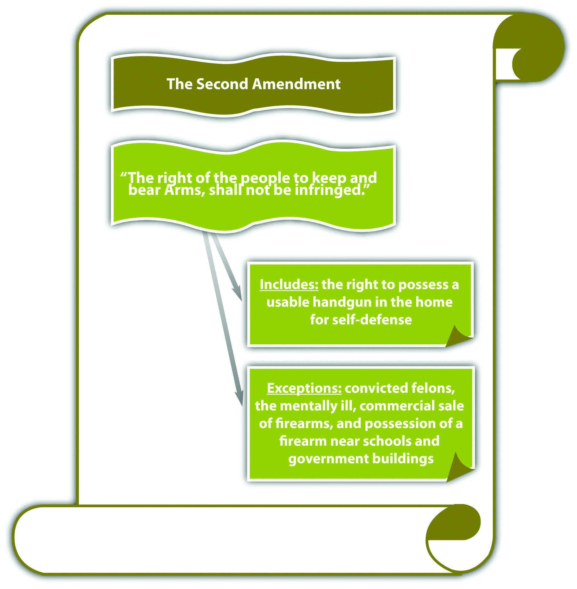

Although the federal Constitution specifically references a right to bear arms in the Second AmendmentProtects an individual’s right to possess a usable handgun in the home for self-defense., the US Supreme Court has not interpreted this amendment in a significant fashion until recently. The Second Amendment provides “[a] well regulated Militia, being necessary to the security of a free state, the right of the people to keep and bear Arms, shall not be infringed.” Many state constitutions have a similar provision.Eugene Volokh, “State Constitutional Right to Keep and Bear Arms Provisions,” UCLA website, accessed October 22, 2010, http://www.law.ucla.edu/volokh/beararms/statecon.htm. In 2008, the US Supreme Court explored the Second Amendment and its effect on weapons possession in a case attacking Washington, DC, firearms legislation.District of Columbia v. Heller, 128 S. Ct. 2783 (2008), accessed October 13, 2010, http://www.law.cornell.edu/supct/html/07-290.ZO.html.
In District of Columbia v. Heller, 128 S. Ct. 2783 (2008), the Court affirmed the Court of Appeals for the D.C. Circuit in striking provisions of the Firearms Control Regulations Act of 1975. The Court struck the portions of this act that banned the possession of handguns and mandated that all legal firearms must be kept unloaded and disassembled while in the home. Although the District Court held that the Second Amendment applies only to the militia, the US Supreme Court emphasized that the Second Amendment is exercised individually and belongs to all Americans. The Court also expanded previous interpretations of the Second Amendment to cover an individual’s right to possess a usable handgun in the home for self-defense. The Heller case is unprecedented and is the first to address individual handgun possession under the Second Amendment. However, the Heller ruling is narrow and specifically excludes firearms restrictions on felons, the mentally ill, firearm possession in or near schools or government buildings, and the commercial sale of firearms. The Heller decision also fails to extend the Second Amendment’s protections to the states because Washington, DC, is a federal enclave.
In McDonald v. Chicago, 130 S.Ct. 3020 (2010), the US Supreme Court revisited the gun possession issue by reviewing and rejecting as unconstitutional a handgun ban in the city of Chicago, Illinois. In McDonald, the Court took the extra step of extending the Heller ruling to the states, holding that the Second Amendment applies to the states via its selective incorporation into the due process clause. However, McDonald did not expand the ruling in Heller in other ways and reemphasized the Heller exceptions of firearms restrictions on felons, the mentally ill, firearm possession in or near schools or government buildings, and the commercial sale of firearms.
Dirk is a public middle-school janitor. Occasionally, with the permission of the principal, Dirk stays overnight in an outbuilding on campus when he works a particularly late shift. Dirk wants to keep a handgun in the outbuilding, for protection. If Dirk’s state has a statute prohibiting the possession of a handgun within one mile of any public school, Dirk cannot keep a handgun in the outbuilding for self-defense. Modern US Supreme Court precedent holds that the Second Amendment protects an individual’s right to possess a handgun in the home for self-defense. However, this precedent specifically exempts firearm possession near schools. Unless newer precedent expands the ruling to include firearm possession near schools, the statute in Dirk’s state is constitutional.
Figure 3.7 The Second Amendment
Answer the following questions. Check your answers using the answer key at the end of the chapter.